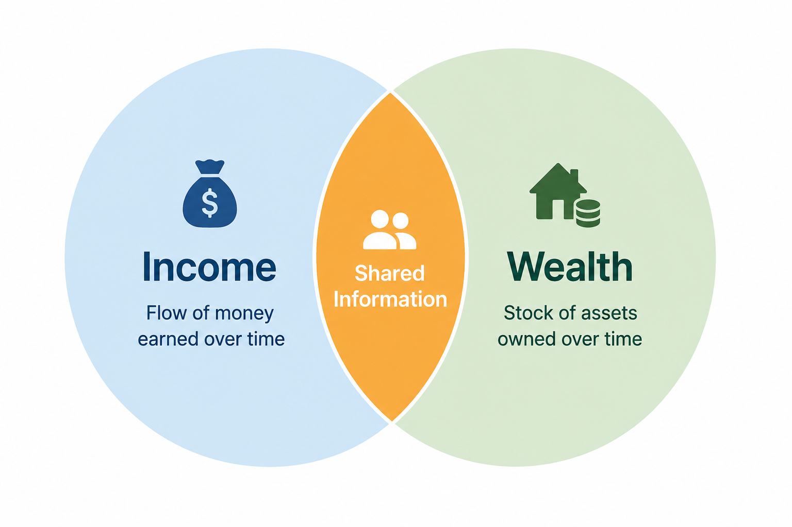
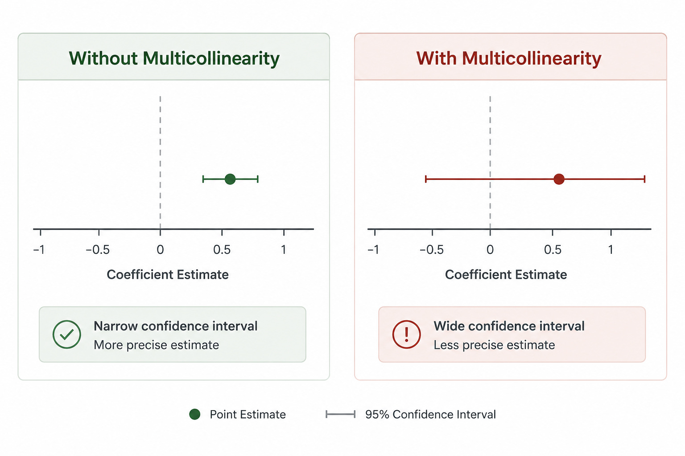
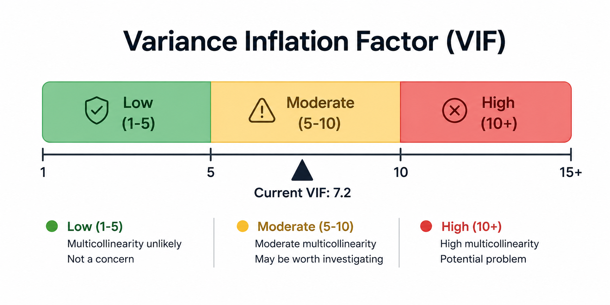

Multicollinearity occurs when two or more independent variables in a regression model are highly correlated with one another. At first glance this may not seem like a problem — after all, if two variables are related, shouldn't they both help explain the outcome? The issue is that the model struggles to tell which variable is actually responsible for the observed association.

Imagine trying to determine whether income or wealth has a stronger relationship with a health outcome. Since the two are closely related, the model finds it difficult to separate their individual contributions.
As a result:

Multicollinearity doesn't necessarily reduce the model's ability to make predictions. What it affects is our confidence in interpreting the individual regression coefficients. A model can still fit the data well while the story it tells about any single predictor becomes unreliable.

If multicollinearity is identified, researchers may decide to:
Regression models don't just require the right statistical test — they also require the right variables. Before interpreting individual coefficients, ask yourself whether your predictors are measuring distinct concepts or simply different versions of the same thing.
Check your correlations. Compute your VIF. Interpret with care.